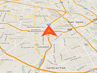

Example of how to dynamically create a 3D marker in the GPS locations of user.
Requirement: Online Maps Location Service component
3D Control
3D Control
Usage instructions:
Add Location Service Component.
Add this script to map GameObject.
Add Location Service Component.
Add this script to map GameObject.
Marker3D_GPS_Example.cs
/* INFINITY CODE 2013-2016 */
/* http://www.infinity-code.com */
using UnityEngine;
namespace InfinityCode.OnlineMapsExamples
{
[AddComponentMenu("Infinity Code/Online Maps/Examples (API Usage)/Marker3D_GPS_Example")]
public class Marker3D_GPS_Example : MonoBehaviour
{
public GameObject prefab;
private OnlineMapsMarker3D locationMarker;
private void Start()
{
// Gets the current 3D control.
OnlineMapsControlBase3D control = GetComponent<OnlineMapsControlBase3D>();
if (control == null)
{
Debug.LogError("You must use the 3D control (Texture or Tileset).");
return;
}
//Create a marker to show the current GPS coordinates.
//Instead of "null", you can specify the texture desired marker.
locationMarker = control.AddMarker3D(Vector2.zero, prefab);
//Hide handle until the coordinates are not received.
locationMarker.enabled = false;
// Gets Location Service Component.
OnlineMapsLocationService ls = OnlineMapsLocationService.instance;
if (ls == null)
{
Debug.LogError(
"Location Service not found.\nAdd Location Service Component (Component / Infinity Code / Online Maps / Plugins / Location Service).");
return;
}
//Subscribe to the GPS coordinates change
ls.OnLocationChanged += OnLocationChanged;
ls.OnCompassChanged += OnCompassChanged;
//Subscribe to zoom change
OnlineMaps.instance.OnChangeZoom += OnChangeZoom;
}
private void OnChangeZoom()
{
//Example of scaling object
int zoom = OnlineMaps.instance.zoom;
if (zoom >= 5 && zoom < 10)
{
float s = 10f / (2 << (zoom - 5));
Transform markerTransform = locationMarker.transform;
if (markerTransform != null) markerTransform.localScale = new Vector3(s, s, s);
// show marker
locationMarker.enabled = true;
}
else
{
// Hide marker
locationMarker.enabled = false;
}
}
private void OnCompassChanged(float f)
{
//Set marker rotation
Transform markerTransform = locationMarker.transform;
if (markerTransform != null) markerTransform.rotation = Quaternion.Euler(0, f * 360, 0);
}
//This event occurs at each change of GPS coordinates
private void OnLocationChanged(Vector2 position)
{
//Change the position of the marker to GPS coordinates
locationMarker.position = position;
//If the marker is hidden, show it
if (!locationMarker.enabled) locationMarker.enabled = true;
}
}
}